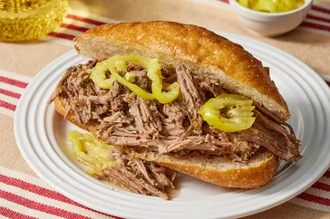

Slow Cooker Italian Beef
This Italian beef is perfect for sandwiches. It’s easy to make in a slow cooker and tastes just like my all-time favorite sandwich that I used to get at a local restaurant when I lived in a suburb of Chicago. Serve on crusty rolls with roasted sweet or hot peppers.

ingredients
- 3 cups water
- 1 (.7-ounce) package dry Italian-style salad dressing mix
- 1 teaspoon dried oregano
- 1 teaspoon dried basil
- 1 teaspoon dried parsley
- 1 teaspoon onion salt
- 1 teaspoon garlic powder
- 1 bay leaf
- 1 teaspoon salt
- 1 teaspoon ground black pepper
- 1 (5-pound) rump roast
Steps
- Combine water, salad dressing mix, oregano, basil, parsley, onion salt, garlic powder, bay leaf, salt, and black pepper in a saucepan. Stir well, and bring to a boil.
- Place rump roast in a slow cooker; pour hot herb mixture over the meat.
- Cover and cook on Low for 10 to 12 hours, or on High for 4 to 5 hours.
- Remove bay leaf; shred beef with a fork and serve with some of the hot gravy.
Back to home